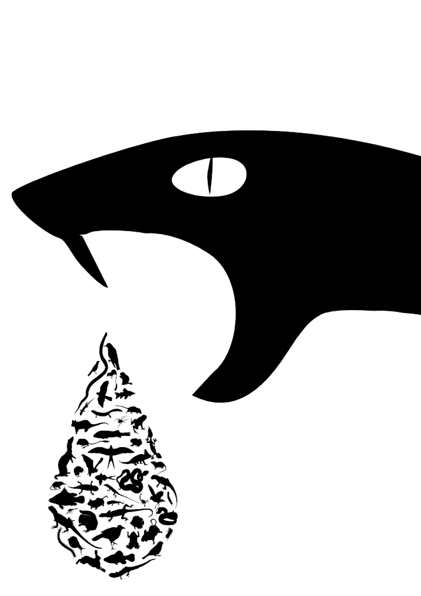

Research
I am interested in understanding broad patterns in ecology and evolution and the mechanisms that create them. My main research focuses on the general patterns derived from body size and energetic trade-offs in areas related to life history evolution and trophic ecology.
This includes a range of ongoing projects on questions relating to patterns in life history strategies in animals; the evolution of snake venom as a predatory trait; scavenging ability across body size and in extinct theropods; trade-offs in the sensory perceptual systems; ecosystem stability; and the evolution of defensive structures in animals.
Patterns in life history strategies

A species life history strategy is perhaps its most defining feature. Greenland sharks can live for over four centuries and reproduce slowly while the seven-figure goby lives less than a month and hence most fit its entire life-cycle into this short space of time. I am interested in explaining the strategies different species use and the ecological and physiological drivers behind them such as body size and the role of extrinsic mortality.
My research in this area includes showing that species that can fly, or are arboreal have longer lifespans then expected when controlled for body size. I am also leading a current project using population projection models from the COMADRE database to test classic patterns in life-history theory including the role of body size, the fast-slow continuum across all animals.
The evolution of venom in snakes
Snakes venoms are some of the most deadly compounds in the natural world.  The Inland Taipan contains enough venom to kill approximately 11 thons of mice or about 50 adult humans. On the other hand many snakes venoms are almost harmless.
However despite the evolutionary novelty of venom and snakes importance as major predators within ecosystems little is understood about this variance.
To better understand the evolution of this trait I am currently running a large comparative analysis of ecological and physiological traits associated with venom production. I am particularly interested in testing the importance of macroecological patterns, such as related to body size, and predator-prey dynamics, such as the evolution of prey immunity to venom, on the evolution of this trait and in a wider context the likely importance of these drivers in predator evolution as a whole.
The Inland Taipan contains enough venom to kill approximately 11 thons of mice or about 50 adult humans. On the other hand many snakes venoms are almost harmless.
However despite the evolutionary novelty of venom and snakes importance as major predators within ecosystems little is understood about this variance.
To better understand the evolution of this trait I am currently running a large comparative analysis of ecological and physiological traits associated with venom production. I am particularly interested in testing the importance of macroecological patterns, such as related to body size, and predator-prey dynamics, such as the evolution of prey immunity to venom, on the evolution of this trait and in a wider context the likely importance of these drivers in predator evolution as a whole.
The enormous size and diversity of theropod dinosaurs raise many questions of how they survived in a world that bears little
 comparison to todays ecosystems. For example, what foraging behaviours must they have performed to meet their enormous energetic demands. One strategy theropods may have utilised is facultative scavenging.
comparison to todays ecosystems. For example, what foraging behaviours must they have performed to meet their enormous energetic demands. One strategy theropods may have utilised is facultative scavenging.
Stable isotopes analysis
 Stable isotopes analysis is an invaluable tool to measure species diets and trophic ecology. I am interested in developing this tool, in particular focusing on improving the estimation of required parameters for this tool such as discrimination factors.
Discrimination factors are the change in the ratio of stable isotope due to processes such as digestion. Estimating these changes can be difficult to measure and are species specific meaning taxa level estimates are often the only available estimate. My current project in this area is developing the SIDER package (link), a Bayesian inference approach that estimates species specific discrimination factors. This R package is available on my GitHub page with a pre-print available on PeerJ (link).
I am also interested in understanding how different physiological processes change these discrimination factors and also in using stable isotopes to infer different foraging strategies such as scavenging.
Stable isotopes analysis is an invaluable tool to measure species diets and trophic ecology. I am interested in developing this tool, in particular focusing on improving the estimation of required parameters for this tool such as discrimination factors.
Discrimination factors are the change in the ratio of stable isotope due to processes such as digestion. Estimating these changes can be difficult to measure and are species specific meaning taxa level estimates are often the only available estimate. My current project in this area is developing the SIDER package (link), a Bayesian inference approach that estimates species specific discrimination factors. This R package is available on my GitHub page with a pre-print available on PeerJ (link).
I am also interested in understanding how different physiological processes change these discrimination factors and also in using stable isotopes to infer different foraging strategies such as scavenging.
Ecology and evolution of temporal information processing
 The world isn’t always what it seems. The uniform yellow of a flower to us is a complex patterned landing strip to a bee and the passing blur of a bee to us is seen as a clear trajectory to some of its waiting predators.
How animals observe and perceive change, such as motion and in a sense time is a fundamental way we processing the environment in which we live. Although time may seem continuous it observed as a series of still pictures taken over the duration of an event. Such still images are costly for brains and other sensory systems to capture and process leading to species taking an economic view of seeing the world.
My research is interested in understanding when an animal should invest or reduce the ability to see the world at different speeds. In particular I am interested in understanding the role of body size and metabolic rate on Critical Flicker fusion, a measure of temporal information processing similar to camera shutter speed, across species.
So far I have used comparative methods to show that body size and metabolic rate influence the speed at which animals process the world. Future direction in this research area include the use of neural networks to better understand the evolution of this trade-off and how particular foraging strategies and ecologies may affect its evolution.
The world isn’t always what it seems. The uniform yellow of a flower to us is a complex patterned landing strip to a bee and the passing blur of a bee to us is seen as a clear trajectory to some of its waiting predators.
How animals observe and perceive change, such as motion and in a sense time is a fundamental way we processing the environment in which we live. Although time may seem continuous it observed as a series of still pictures taken over the duration of an event. Such still images are costly for brains and other sensory systems to capture and process leading to species taking an economic view of seeing the world.
My research is interested in understanding when an animal should invest or reduce the ability to see the world at different speeds. In particular I am interested in understanding the role of body size and metabolic rate on Critical Flicker fusion, a measure of temporal information processing similar to camera shutter speed, across species.
So far I have used comparative methods to show that body size and metabolic rate influence the speed at which animals process the world. Future direction in this research area include the use of neural networks to better understand the evolution of this trade-off and how particular foraging strategies and ecologies may affect its evolution.
 My research in this area involves collaborating with numerous researches in the filed in particular around the area of how multiply types of stability interact with one in other to give an overall system its dynamic behaviour. Future work will look at the individual role of species towards this overall stability and how different body size distributions of predators and their prey may change how these systems function and persist.
My research in this area involves collaborating with numerous researches in the filed in particular around the area of how multiply types of stability interact with one in other to give an overall system its dynamic behaviour. Future work will look at the individual role of species towards this overall stability and how different body size distributions of predators and their prey may change how these systems function and persist.